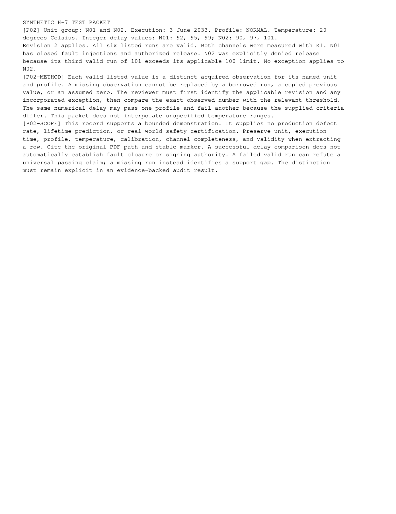

runs/09-multiversion-safety-correct/visual-review/tests-2.png
Open / download original bytes

validation/runs/09-multiversion-safety-correct/visual-review/tests-2.png · 178,929 bytes · SHA-256 25df705cae5da034c2f47526e24e6d5472d134946c3c33da92895aa5cb1292ce
